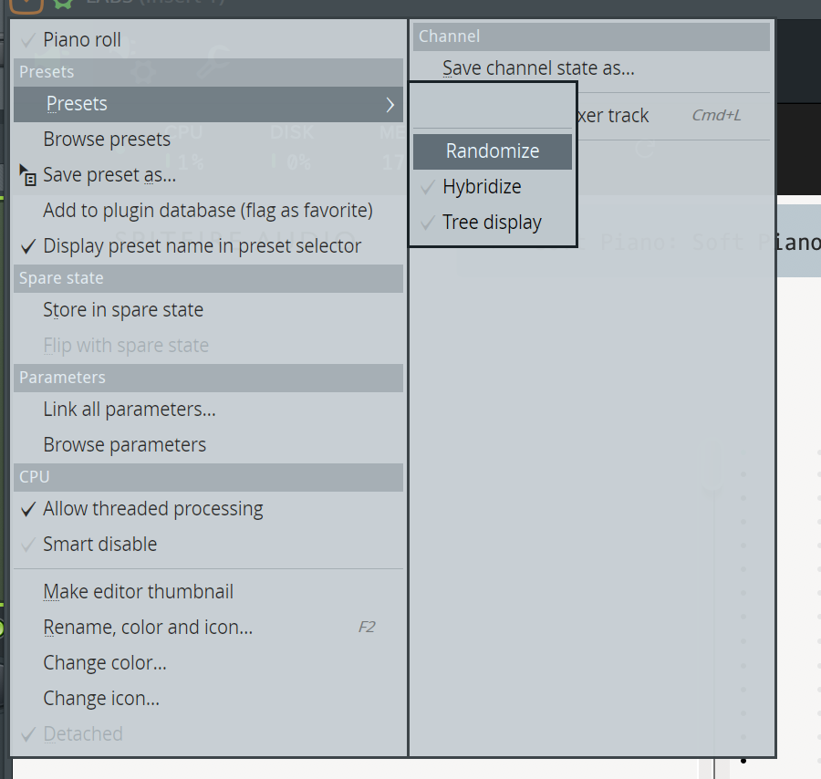
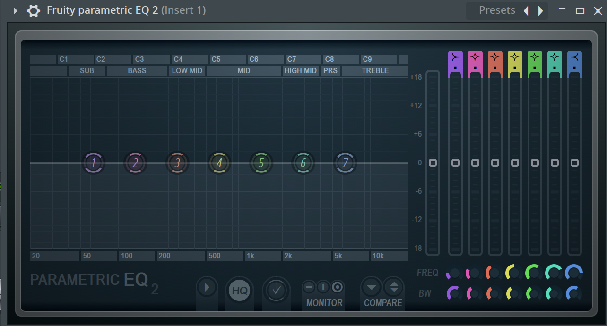
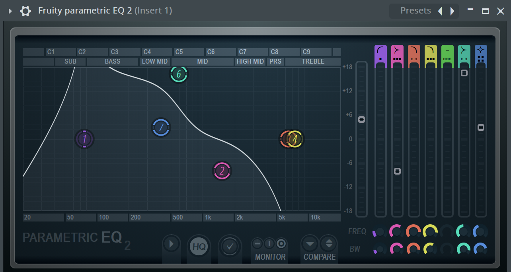
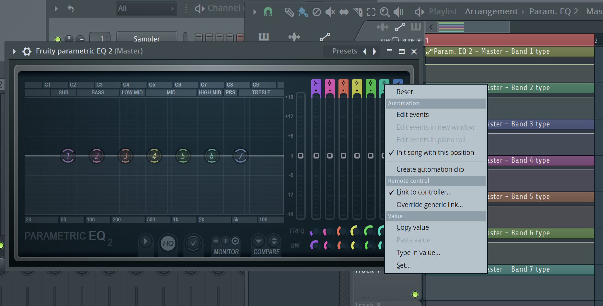
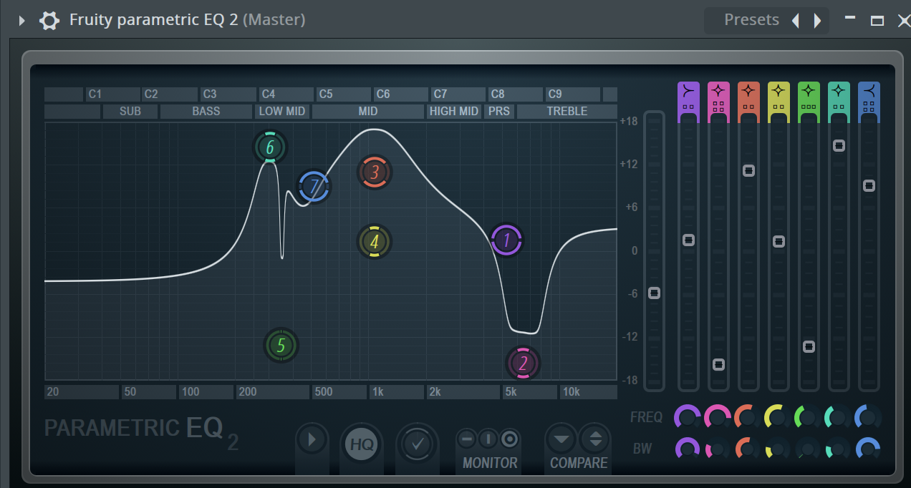
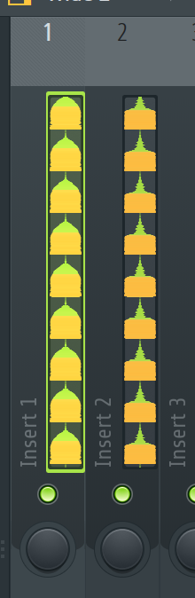
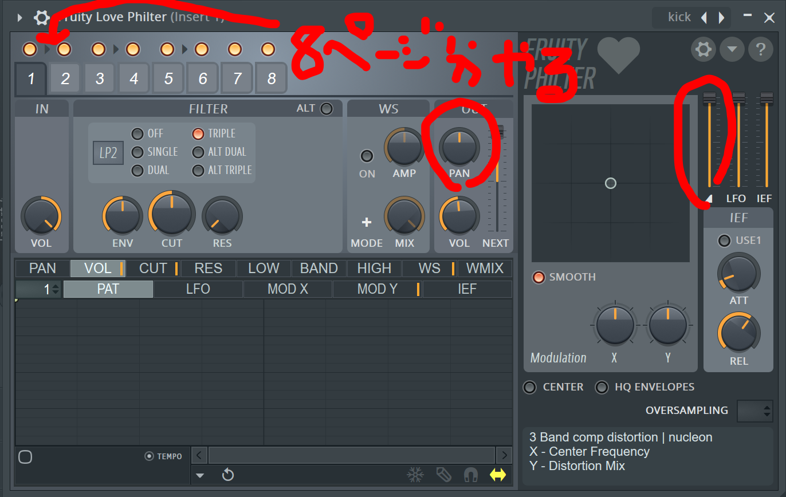
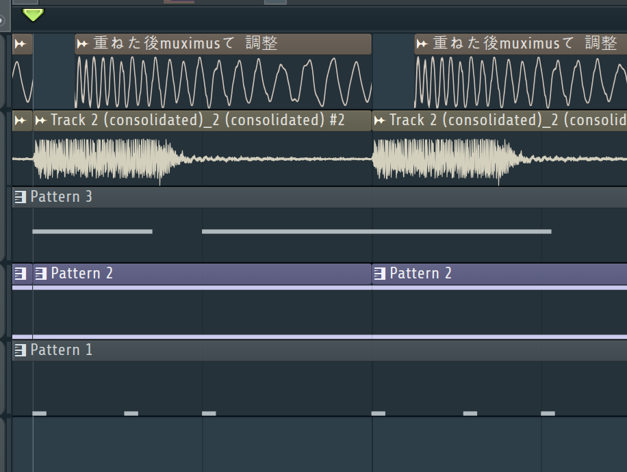

※この記事は使用するプラグインや機能の関係上、FL Studioユーザー向けに書かれています。
ウオオ saaaと申します。さえさんと読みます。
突然ですが皆さん、歪んだキックは好きですか？好きですよね、ええ（？）歪んだ強いキックを作りたい！と思ったことはありませんか？
でも元の音から作って歪ませてEQかけてコンプで潰して…….とかいう難しそうな作業はちょっと敷居が高いと思ってませんか？？
そんな時には「運」に任せてキック作りしちゃいましょう。
FL StudioにはRandomizeという設定可能なパラメーターを全てランダムにしてしまう素晴らしい機能があることをご存知ですか？
左上の三角マーク→Presets→Randomize から選択することができます。三角を押したあとキーボードでp,rと押すと素早くランダマイズができます。
ここに何の変哲も無いEQ君があります。これにRandomizeをかけてあげると…
ウワーーーーーーーーッ
低音モリモリに魔改造されてしまいました。可哀想に…
基本的に最悪な状態にされてしまうのでぶっちゃけ普通にDTMする分には一切使用しない機能です。
でもこの機能、「一部のパラメーターだけ固定してあとはランダム」ってことが出来ればかなり便利な機能になると思いませんか？
これを実現する方法として、オートメーションを使用することで可能となります。
固定したい項目の上で右クリックしてCreate automation clipを押すことでオートメーションが作れます。右クリック後にaを押すと素早く作成できます。
作ったあとはオートメーションをいじるなどは行いません。
試しにEQの形式を固定してランダマイズを行ってみます。
それぞれのEQの形式（✨みたいなマーク）の上からオートメーションを作ってランダマイズ実行！
気持ち悪いEQになりましたが固定したかった項目はちゃんと固定されています！これを利用してキックの作成を行います。
まず１個以上のキックのサンプルを用意しましょう。複数使用する場合はピッチなどでキックの音程を合わせることを忘れずに。
とりあえず二つのキックを用意しました。
これを重ねてみます。
まだ強いキックには程遠いですね。ここから運ゲーを始めますが、ランダマイズの結果によって耳が死ぬレベルの爆音が出る危険性があるので、
エフェクトの後ろの方にSoundgoodizerなどのリミッターになるものを挿しておくことをお勧めします。
まず用意したキックを別々のミキサーに配置します。
次にミキサーからFruity Love Philterを挿してください。あと以下のリンクから運ゲー用のプリセットを用意しましたのでダウンロードしてください。
https://drive.google.com/open?id=106cAhaE8e3U9yoFLtRwZsvsrmv_pgoI3
プリセットを読み込んだら、オートメーションでPAN（８ページ分）とマスター音量を固定してしまいましょう。
固定が終わったら、ランダマイズ！！
ちょっと芯があるようなキックに変貌しました。実際にやる場合、好きな音が出るまでランダマイズを続けてください。
キックを複数用意している場合、もう一方も同様に行いましょう。
こちらはランダマイズに加え、EQでちょっと高音をブーストして若干リバーブを加えています。エフェクトは付けたいと思ったら付けちゃいましょう。
Fruity Love Philterを二重で挿すというのもアリです。実際にやってみましょう。ランダマイズ！！！
なんとﾎﾟと鳴るアタックになりました。意図しない音に変化するのは面白いですね。
ここまで二つのキックにエフェクトを挿してきましたが、マスターのボリュームを見てみるとクリッピングが起きてませんか？
このままだとうまく出力ができなくなってしまうので、二つのキックをまとめて潰してしまいましょう。
まずShift+Ctrl+ドラッグでキックを鳴らしてるチャンネル＋１個のチャンネルを選択してください。
次に＋１個の何も鳴らしてないチャンネルの上で右クリックしてTrack routing→Route selected to this track onlyを押しましょう。
こうすることで選択したチャンネルを一つのチャンネルにまとめることができます。
次にまとめたチャンネルにMaximusを挿します。こいつもランダマイズをするので以下の場所をオートメーションで固定してください。
準備ができたら、ランダマイズ！！！！
ちょっとだけ歪みが出てるように聞こえます。さらにマスターを見てもクリッピングしなくなっているはずです。
ここまでが付属エフェクトで可能なキック作成になります。他にいろんなエフェクトを試すと面白いキックが作れるかも…？
無事キックが完成したので実際に曲に組み込んでみましょう！作ったキックをそのまま使うのもいいですが、さらに改造するともっといい音になるかもしれません。
こちらは先ほどのキックを使って作った曲です。最初のビルドアップはそのままのキックを使用していますが、その後のキックはかなり改造してるのがわかると思います。
これは元のキックをさらに歪ませてできたものを頭だけ取ったアタックを重ねて作っています。
この辺りの作り込みは本場の音を聴きまくって作り方を考察していくぐらいしかできないと思います…（それでもエフェクトのランダマイズはめっちゃ使ってます）
歪み系のジャンルはキックが完成した地点で、曲が４割くらい完成したといっても過言ではないレベルでキックの作りを大事にします。
この記事で歪み系ジャンル作りたい！って思う人が増えたなら幸いです。おしまい